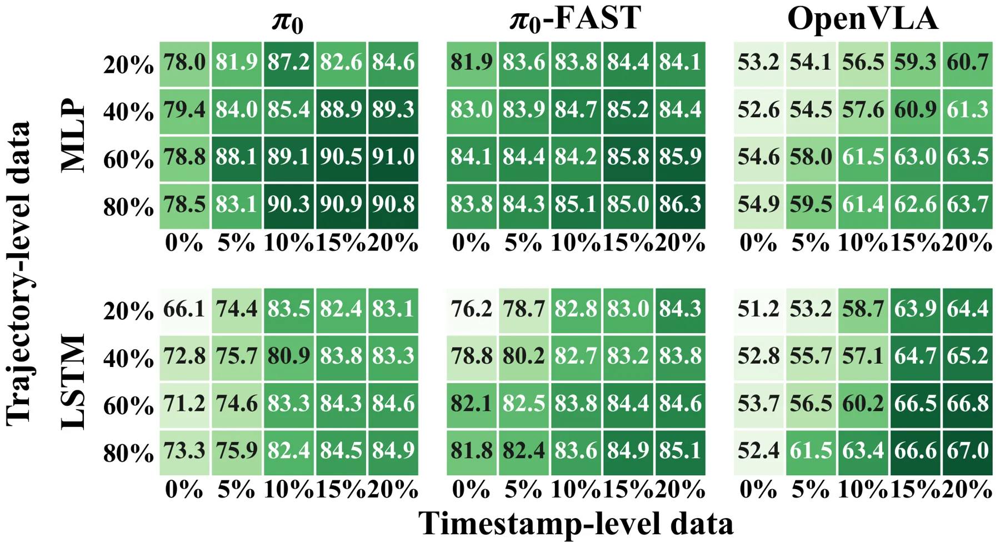
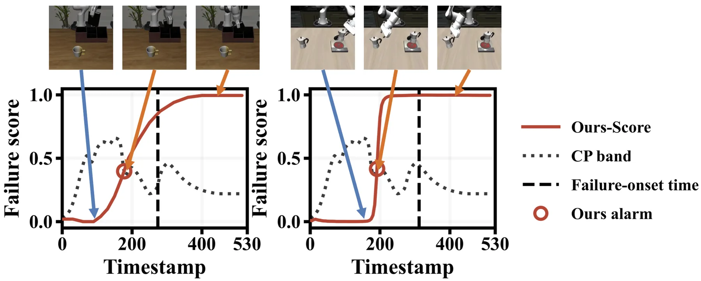
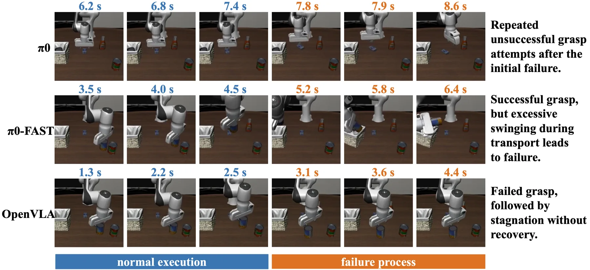

FailureSpot：面向 VLA 的低标注时间戳级失败检测FailureSpot: Label-Efficient Timestamp-Level Failure Detection for Vision-Language-Action Models
A 级 VLA 可靠性方向，直接对应长时域策略的在线安全监控。
一句话工作总结
FailureSpot 将失败检测从事后视觉判断推进到动作执行过程中的时间戳定位。
半海报（待补全）
当前记录尚未达到完整海报质量门槛，暂不把摘要或评分理由冒充方法/实验结论。
待补字段：研究上下文.authors（至少 1 条实质条目）。下一次任务需从论文全文或官方 HTML 提取证据后再发布。
摘要
方法利用动作 chunk 的弱监督信号和主动学习，只为不确定轨迹补充时间戳标注。论文同时评估 trajectory-level 与 timestamp-level 检测。
Vision-language-action (VLA) policies have shown strong potential for general-purpose robotic manipulation, but they can still fail unpredictably during long-horizon execution, making reliable failure detection essential for safe deployment. Existing methods either rely on visual models that typically detect failures only after erroneous actions have occurred, or use lightweight proactive detectors trained on VLA internal representations. However, these proactive methods are often supervised with trajectory-level labels, causing normal pre-failure behavior in unsuccessful trajectories to be incorrectly labeled as failure. This supervision mismatch introduces label noise and limits both trajectory-level detection accuracy and precise timestamp-level failure localization. In this work, we study fine-grained timestamp-level VLA failure detection while addressing the cost of dense annotation. We propose a data-efficient framework that first leverages unlabeled VLA action chunks to construct action-derived weak supervision signals, capturing abnormal patterns such as inconsistent consecutive chunks, frozen or idle actions, and aggressive random motions. We then use active learning to select only the most uncertain trajectories for timestamp-level annotation and fine-tune the detector with these informative labels. Experiments across multiple VLA policies show that our method improves both timestamp-level and trajectory-level failure detection performance.
图表/页面预览

{kind=link}

{kind=link}

{kind=link}
